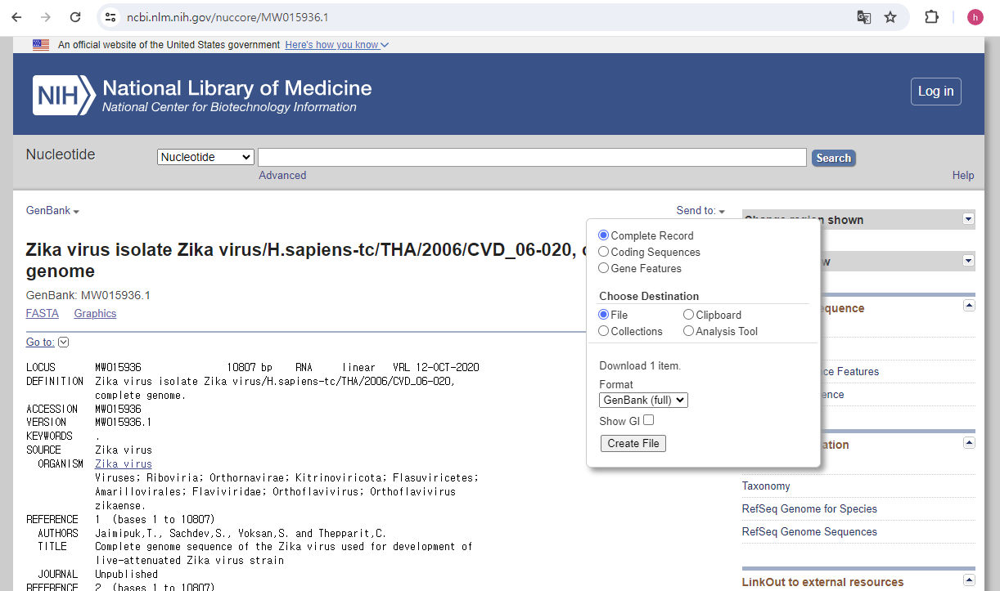
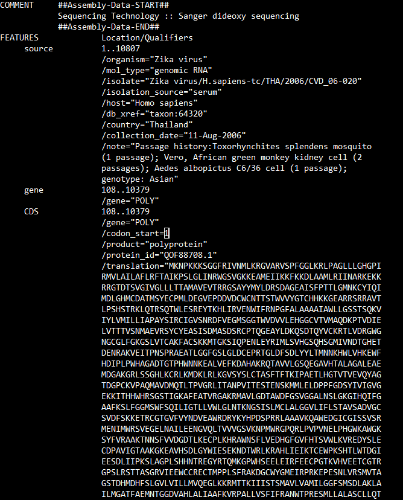
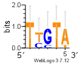

from google.colab import drive
import os
drive.mount('/content/drive')
os.chdir('drive/MyDrive/2024-cnu-lecture')Mounted at /content/driveI want to learn about “3. Bioinformatics Libraries”. Can you explain it with example codes?
Certainly! Bioinformatics libraries in Python, such as Biopython and scikit-bio, provide tools and functions to handle biological data, including sequence analysis, structure analysis, and more. Here’s a brief introduction to these libraries with example codes.
Biopython is one of the most widely used libraries for bioinformatics in Python. It provides tools for reading and writing different bioinformatics file formats, performing sequence analysis, and interacting with biological databases.
from google.colab import drive
import os
drive.mount('/content/drive')
os.chdir('drive/MyDrive/2024-cnu-lecture')Mounted at /content/drive!pip install biopythonfrom Bio.Seq import Seq
my_seq = Seq("AGTACACTGGT")
my_seqSeq('AGTACACTGGT')for index, letter in enumerate(my_seq):
print("%i %s " % (index, letter))0 A
1 G
2 T
3 A
4 C
5 A
6 C
7 T
8 G
9 G
10 T x = [1, 4, 5, 7, 8]
for i in enumerate(x):
print(i)
for i in x:
print(i)(0, 1)
(1, 4)
(2, 5)
(3, 7)
(4, 8)
1
4
5
7
8print(my_seq)
print(my_seq[0:3])
print(my_seq[0::2])
print(str(my_seq))
print(my_seq + "ATG")
print(my_seq=="ATG")
print("AGT" in my_seq)AGTACACTGGT
AGT
ATCCGT
AGTACACTGGT
AGTACACTGGTATG
False
Truemy_seq_low = my_seq.lower()
print(my_seq_low)
print(my_seq_low.upper())
print(my_seq.complement())
print(my_seq.reverse_complement())agtacactggt
AGTACACTGGT
TCATGTGACCA
ACCAGTGTACTmrna = my_seq.transcribe()
print(mrna)
prot = mrna.translate() ## truncated
print(prot)
print(my_seq.translate())AGUACACUGGU
STL
STL/home/haseong/anaconda3/envs/biopy/lib/python3.11/site-packages/Bio/Seq.py:2880: BiopythonWarning: Partial codon, len(sequence) not a multiple of three. Explicitly trim the sequence or add trailing N before translation. This may become an error in future.
warnings.warn(from Bio.Data import CodonTable
standard_table = CodonTable.unambiguous_dna_by_id[1]
print(standard_table)
print(standard_table.start_codons)
print(standard_table.stop_codons)
print(type(standard_table))Table 1 Standard, SGC0
| T | C | A | G |
--+---------+---------+---------+---------+--
T | TTT F | TCT S | TAT Y | TGT C | T
T | TTC F | TCC S | TAC Y | TGC C | C
T | TTA L | TCA S | TAA Stop| TGA Stop| A
T | TTG L(s)| TCG S | TAG Stop| TGG W | G
--+---------+---------+---------+---------+--
C | CTT L | CCT P | CAT H | CGT R | T
C | CTC L | CCC P | CAC H | CGC R | C
C | CTA L | CCA P | CAA Q | CGA R | A
C | CTG L(s)| CCG P | CAG Q | CGG R | G
--+---------+---------+---------+---------+--
A | ATT I | ACT T | AAT N | AGT S | T
A | ATC I | ACC T | AAC N | AGC S | C
A | ATA I | ACA T | AAA K | AGA R | A
A | ATG M(s)| ACG T | AAG K | AGG R | G
--+---------+---------+---------+---------+--
G | GTT V | GCT A | GAT D | GGT G | T
G | GTC V | GCC A | GAC D | GGC G | C
G | GTA V | GCA A | GAA E | GGA G | A
G | GTG V | GCG A | GAG E | GGG G | G
--+---------+---------+---------+---------+--
['TTG', 'CTG', 'ATG']
['TAA', 'TAG', 'TGA']
<class 'Bio.Data.CodonTable.NCBICodonTableDNA'>from Bio.Seq import Seq
my_seq = Seq("AGTACACTGGT")
my_seq[5] = "G"from Bio.Seq import MutableSeq
mutable_seq = MutableSeq(my_seq)
mutable_seq
mutable_seq[5] = "G"
mutable_seq
new_seq = Seq(mutable_seq)
new_seqSeq('AGTACGCTGGT')seq = Seq("GCCATTGTAATGGGCCGCTGAAAGGGTGCCCGA")
print(seq.index("ATG"))
print(seq.find("ATG"))
print(seq.find("AAAAA"))from Bio.Seq import Seq
from Bio.SeqRecord import SeqRecord
simple_seq = Seq("GATC")
simple_seq_r = SeqRecord(simple_seq)help(SeqRecord)simple_seq_r.id = "AC12345"
simple_seq_r.description = "Made up sequence I wish I could write a paper about"
print(simple_seq_r.description)
print(simple_seq_r.seq)
인용구 추가
from Bio import SeqIO
record = SeqIO.read("data/MW015936.gb", "gb")print(record)
help(record)print(record.id)
print(record.name)
print(record.description)
print(record.seq)
print(record.features)print(len(record.seq))
list(record.features)
print(record.features[0])
print(record.features[1])
print(record.features[2])record.features[2].extract(record.seq)Seq('ATGAAAAACCCAAAGAAGAAATCCGGAGGATTCCGGATTGTCAATATGCTAAAA...TAA')for feature in record.features:
if 4350 in feature:
print(f"type: {feature.type} start: {feature.location.start} end: {feature.location.end}")type: source start: 0 end: 10807
type: gene start: 107 end: 10379
type: CDS start: 107 end: 10379
type: mat_peptide start: 4223 end: 4613sub_record = record[3000:5000]
print(sub_record)
print(len(sub_record))
print(len(sub_record.features))
print(sub_record.features[0])
print(sub_record.features[1])[User]
I have a genbank file. I want extract all the features of “mat_peptide” type in the file and calculate their length. can you show me a python code?
[ChatGPT]
Certainly! You can use Biopython to read a GenBank file and extract features of a specific type, such as “mat_peptide”. Here’s how you can do it:
Python Script
Here is the Python script that extracts all “mat_peptide” features from a GenBank file and calculates their lengths:
from Bio import SeqIO
# Function to extract mat_peptide features and calculate their lengths
def extract_mat_peptide_features(file_path):
record = SeqIO.read(file_path, "genbank")
mat_peptides = []
for feature in record.features:
if feature.type == "mat_peptide":
start = feature.location.start.position
end = feature.location.end.position
length = end - start
mat_peptides.append({
"ID": feature.qualifiers.get("product", ["Unknown"])[0],
"Start": start,
"End": end,
"Length": length
})
return mat_peptides
# Example usage
genbank_file = 'example.gb' # Replace with your GenBank file path
mat_peptide_features = extract_mat_peptide_features(genbank_file)
# Print the results
for peptide in mat_peptide_features:
print(f"ID: {peptide['ID']}, Start: {peptide['Start']}, End: {peptide['End']}, Length: {peptide['Length']} bp")Explanation
'example.gb' with the path to your GenBank file. The script will read the file, extract the “mat_peptide” features, and print their IDs, start and end positions, and lengths.Running the Script
Save the script to a file, for example, extract_mat_peptides.py.
Ensure you have the GenBank file (e.g., example.gb) in the same directory.
Run the script from the command line:
python extract_mat_peptides.pyThis script will read the GenBank file, extract all “mat_peptide” features, calculate their lengths, and print the details. If you have any specific questions or need further assistance, feel free to ask!
from Bio import SeqIO
records = SeqIO.parse("data/MW015936.gb", "genbank")
for feature in record.features:
if feature.type == "mat_peptide":
print(feature.qualifiers["product"])
print(feature.location.start, feature.location.end)from Bio import SeqIO
import pandas as pd
from matplotlib import pyplot as plt
import seaborn as sns
mat_peptides = []
records = SeqIO.parse("data/MW015936.gb", "genbank")
for feature in record.features:
if feature.type == "mat_peptide":
mat_peptides.append({
"id": feature.qualifiers["product"],
"start": feature.location.start,
"end": feature.location.end,
"length": feature.location.end - feature.location.start
})
df = pd.DataFrame(mat_peptides)
plt.figure(figsize = (10, 6))
# df["length"].hist()
sns.histplot(df["length"])
plt.xticks(rotation = 90)
plt.show()
from Bio import Entrez
Entrez.email = "kimhaseong@gmail.com"
# Searching NCBI Nucleotide database
handle = Entrez.esearch(db="nucleotide", term="Homo sapiens[Organism] AND BRCA1[Gene]", retmax=5)
record = Entrez.read(handle)
print(record["IdList"])['262359905', '2703623457', '2703623455', '2703623453', '2703623451']from Bio import Entrez
from Bio import SeqIO
entid = record["IdList"][0]
with Entrez.efetch(db="nucleotide", rettype="gb", retmode="text", id=entid) as handle:
seq_record = SeqIO.read(handle, "gb")
print(f"{seq_record.id} with {len(seq_record.features)} features")
print(type(seq_record))
SeqIO.write(seq_record, "/content/drive/My Drive/2024-cnu-lecture/data/"+seq_record.id+".fa", "fasta")
#SeqIO.write(seq_record, seq_record.id+".fa", "fasta")
print(seq_record)from Bio import SeqIO
entids = record["IdList"]
with Entrez.efetch(db="nucleotide", rettype="gb", retmode="text", id=entids) as handle:
for seq_record in SeqIO.parse(handle, "gb"):
print(f"{seq_record.id} {seq_record.description[:50]}")
print(f"Sequence length {len(seq_record)}, {len(seq_record.features)} \
features, from {seq_record.annotations['source']}")
print("\n")
SeqIO.write(seq_record, "/content/drive/My Drive/2024-cnu-lecture/data/"+seq_record.id+".gb", "gb")NG_005905.2 Homo sapiens BRCA1 DNA repair associated (BRCA1),
Sequence length 193689, 130 features, from Homo sapiens (human)
PP465840.1 Homo sapiens isolate TWH-3503-0-1 breast and ovari
Sequence length 5592, 3 features, from Homo sapiens (human)
PP465839.1 Homo sapiens isolate TWH-3747-0-1 truncated breast
Sequence length 891, 3 features, from Homo sapiens (human)
PP465838.1 Homo sapiens isolate TWH-3713-0-1 truncated breast
Sequence length 3462, 3 features, from Homo sapiens (human)
PP465837.1 Homo sapiens isolate OV-0673-0-1 truncated breast
Sequence length 4167, 3 features, from Homo sapiens (human)
from Bio import Align
aligner = Align.PairwiseAligner()
aligner.mode = "global"
aligner.mismatch_score = -10
alignments = aligner.align("AAACAAA", "ACGAAAGAAA")
print(aligner)
print(len(alignments))
print(alignments.score)
print(alignments[0])
print(alignments[1])
print(alignments[2])Pairwise sequence aligner with parameters
wildcard: None
match_score: 1.000000
mismatch_score: -10.000000
target_internal_open_gap_score: 0.000000
target_internal_extend_gap_score: 0.000000
target_left_open_gap_score: 0.000000
target_left_extend_gap_score: 0.000000
target_right_open_gap_score: 0.000000
target_right_extend_gap_score: 0.000000
query_internal_open_gap_score: 0.000000
query_internal_extend_gap_score: 0.000000
query_left_open_gap_score: 0.000000
query_left_extend_gap_score: 0.000000
query_right_open_gap_score: 0.000000
query_right_extend_gap_score: 0.000000
mode: global
12
6.0
target 0 A--AACA-AA- 7
0 |--||-|-||- 11
query 0 ACGAA-AGAAA 10
target 0 A--AACA-A-A 7
0 |--||-|-|-| 11
query 0 ACGAA-AGAAA 10
target 0 A--AACA--AA 7
0 |--||-|--|| 11
query 0 ACGAA-AGAAA 10
aligner = Align.PairwiseAligner(mismatch_score=-10, mode="local")
alignments = aligner.align("AAACAAA", "ACGAAAGAAA")
print(len(alignments))
print(alignments.score)
print(alignments[0])
print(alignments[1])
print(alignments[2])12
6.0
target 0 A--AACA-AA 7
0 |--||-|-|| 10
query 0 ACGAA-AGAA 9
target 0 A--AACA-A-A 7
0 |--||-|-|-| 11
query 0 ACGAA-AGAAA 10
target 0 A--AACA--AA 7
0 |--||-|--|| 11
query 0 ACGAA-AGAAA 10
print(alignments[0])
print(type(alignments[0]))
print(alignments[0].shape)
print(alignments[0].indices)
print(alignments[0].counts())
display(alignments[0].frequencies)target 0 A--AACA-AA 7
0 |--||-|-|| 10
query 0 ACGAA-AGAA 9
<class 'Bio.Align.Alignment'>
(2, 10)
[[ 0 -1 -1 1 2 3 4 -1 5 6]
[ 0 1 2 3 4 -1 5 6 7 8]]
AlignmentCounts(gaps=4, identities=6, mismatches=0){'A': array([2., 0., 0., 2., 2., 0., 2., 0., 2., 2.]),
'-': array([0., 1., 1., 0., 0., 1., 0., 1., 0., 0.]),
'C': array([0., 1., 0., 0., 0., 1., 0., 0., 0., 0.]),
'G': array([0., 0., 1., 0., 0., 0., 0., 1., 0., 0.])}from Bio import Entrez, SeqIO
from Bio.Seq import Seq
from Bio.SeqRecord import SeqRecord
from Bio import pairwise2
from Bio.pairwise2 import format_alignment
# Always provide your email when using NCBI's Entrez
Entrez.email = "your.email@example.com" # Replace with your email address
def download_sequence(accession):
"""Download a sequence by its accession number from NCBI."""
handle = Entrez.efetch(db="nucleotide", id=accession, rettype="gb", retmode="text")
seq_record = SeqIO.read(handle, "genbank")
handle.close()
return seq_record
def compare_sequences(seq1, seq2):
"""Perform a simple sequence alignment between two sequences."""
alignments = pairwise2.align.globalxx(seq1.seq, seq2.seq)
return alignments[0] # Return the first alignment
# Accession numbers for EGFP and sfGFP from NCBI
egfp_accession = "U55762" # Example accession, update as necessary
sfgfp_accession = "EU304438" # Example accession, update as necessary
# Download sequences
egfp_seq = download_sequence(egfp_accession)
sfgfp_seq = download_sequence(sfgfp_accession)
# Compare sequences
alignment = compare_sequences(egfp_seq, sfgfp_seq)
# Print alignment
print(format_alignment(*alignment))from Bio import Entrez, SeqIO
from Bio import pairwise2
from Bio.pairwise2 import format_alignment
# Always provide your email when using NCBI's Entrez
Entrez.email = "your.email@example.com" # Replace with your email address
def download_sequence(accession):
"""Download a sequence by its accession number from NCBI."""
handle = Entrez.efetch(db="nucleotide", id=accession, rettype="gb", retmode="text")
seq_record = SeqIO.read(handle, "genbank")
handle.close()
return seq_record
def compare_sequences(seq1, seq2):
"""Perform a sequence alignment between two sequences and format the output."""
# Using a simple scoring: 1 point for match, -1 for mismatch, -2 for opening a gap, -0.5 for extending it
alignments = pairwise2.align.globalms(seq1.seq, seq2.seq, 2, -1, -2, -0.5, one_alignment_only=True)
best_alignment = alignments[0]
return best_alignment
def print_alignment(alignment):
"""Print formatted alignment."""
aligned_seq1, aligned_seq2, score, start, end = alignment
match_line = [] # To store the match symbols ('|', ' ', '*')
for base1, base2 in zip(aligned_seq1, aligned_seq2):
if base1 == base2:
match_line.append('|') # Match
else:
match_line.append(' ') # Mismatch
# Print the results
print("Alignment:")
print("Score:", score)
print(aligned_seq1[start:end])
print(''.join(match_line[start:end]))
print(aligned_seq2[start:end])
# Accession numbers for EGFP and sfGFP
egfp_accession = "U55762" # Example accession, update as necessary
sfgfp_accession = "EU304438" # Example accession, update as necessary
# Download sequences
egfp_seq = download_sequence(egfp_accession)
sfgfp_seq = download_sequence(sfgfp_accession)
# Compare sequences
alignment = compare_sequences(egfp_seq, sfgfp_seq)
# Print formatted alignment
print_alignment(alignment)from Bio import Entrez, SeqIO
from Bio import pairwise2
from Bio.pairwise2 import format_alignment
# Always provide your email when using NCBI's Entrez
Entrez.email = "your.email@example.com" # Replace with your email address
def download_sequence(accession):
"""Download a sequence by its accession number from NCBI."""
handle = Entrez.efetch(db="nucleotide", id=accession, rettype="gb", retmode="text")
seq_record = SeqIO.read(handle, "genbank")
handle.close()
return seq_record
def compare_sequences(seq1, seq2):
"""Perform a sequence alignment between two sequences and format the output."""
alignments = pairwise2.align.globalms(seq1.seq, seq2.seq, 2, -1, -2, -0.5, one_alignment_only=True)
return alignments[0] # Return the first alignment
def print_alignment(alignment, chunk_size=60):
"""Print formatted alignment in chunks."""
aligned_seq1, aligned_seq2, score, start, end = alignment
alignment_length = end - start
print("Alignment Score:", score)
for i in range(0, alignment_length, chunk_size):
subseq1 = aligned_seq1[start+i:start+i+chunk_size]
subseq2 = aligned_seq2[start+i:start+i+chunk_size]
# Generate a matching line
match_line = ''.join('|' if b1 == b2 else ' ' for b1, b2 in zip(subseq1, subseq2))
# Print the alignment in chunks
print("\nAlignment chunk from position", start+i+1, "to", min(start+i+chunk_size, alignment_length))
print(subseq1)
print(match_line)
print(subseq2)
# Accession numbers for EGFP and sfGFP
egfp_accession = "U55762" # Example accession, update as necessary
sfgfp_accession = "EU304438" # Example accession, update as necessary
# Download sequences
egfp_seq = download_sequence(egfp_accession)
sfgfp_seq = download_sequence(sfgfp_accession)
# Compare sequences
alignment = compare_sequences(egfp_seq, sfgfp_seq)
# Print formatted alignment
print_alignment(alignment, chunk_size=60) # You can adjust the chunk size as needed
from Bio import Entrez, SeqIO
from Bio import pairwise2
from Bio.pairwise2 import format_alignment
# Always provide your email when using NCBI's Entrez
Entrez.email = "your.email@example.com" # Replace with your email address
def download_sequence(accession):
"""Download a sequence by its accession number from NCBI."""
handle = Entrez.efetch(db="nucleotide", id=accession, rettype="gb", retmode="text")
seq_record = SeqIO.read(handle, "genbank")
handle.close()
return seq_record
def compare_sequences(seq1, seq2):
"""Perform a sequence alignment between two sequences and format the output."""
alignments = pairwise2.align.globalms(seq1.seq, seq2.seq, 2, -1, -2, -0.5, one_alignment_only=True)
return alignments[0] # Return the first alignment
def print_alignment(alignment, seq1_acc, seq2_acc, chunk_size=60):
"""Print formatted alignment in chunks, including accession numbers and statistics."""
aligned_seq1, aligned_seq2, score, start, end = alignment
alignment_length = end - start
total_mismatches = sum(1 for b1, b2 in zip(aligned_seq1, aligned_seq2) if b1 != b2)
print(f"Alignment Score: {score}")
print(f"Total Length: {alignment_length}")
print(f"Mismatches: {total_mismatches}")
for i in range(0, alignment_length, chunk_size):
subseq1 = aligned_seq1[start+i:start+i+chunk_size]
subseq2 = aligned_seq2[start+i:start+i+chunk_size]
# Generate a matching line
match_line = ''.join('|' if b1 == b2 else ' ' for b1, b2 in zip(subseq1, subseq2))
# Print the alignment in chunks
print(f"\n{seq1_acc} (position {start+i+1} to {min(start+i+chunk_size, alignment_length)})")
print(subseq1)
print(match_line)
print(f"{seq2_acc} (position {start+i+1} to {min(start+i+chunk_size, alignment_length)})")
print(subseq2)
# Accession numbers for EGFP and sfGFP
egfp_accession = "U55762" # Example accession, update as necessary
sfgfp_accession = "EU304438" # Example accession, update as necessary
# Download sequences
egfp_seq = download_sequence(egfp_accession)
sfgfp_seq = download_sequence(sfgfp_accession)
# Compare sequences
alignment = compare_sequences(egfp_seq, sfgfp_seq)
# Print formatted alignment
print_alignment(alignment, egfp_accession, sfgfp_accession, chunk_size=60) # You can adjust the chunk size as needed!pip install matplotlibfrom Bio import Entrez, SeqIO
from Bio import pairwise2
import matplotlib.pyplot as plt
# Always provide your email when using NCBI's Entrez
Entrez.email = "your.email@example.com" # Replace with your email address
def download_sequence(accession):
"""Download a sequence by its accession number from NCBI."""
handle = Entrez.efetch(db="nucleotide", id=accession, rettype="gb", retmode="text")
seq_record = SeqIO.read(handle, "genbank")
handle.close()
return seq_record
def compare_sequences(seq1, seq2):
"""Perform a sequence alignment between two sequences and format the output."""
alignments = pairwise2.align.globalms(seq1.seq, seq2.seq, 2, -1, -2, -0.5, one_alignment_only=True)
return alignments[0] # Return the first alignment
def plot_alignment(alignment):
"""Plot alignment as a line graph."""
aligned_seq1, aligned_seq2, score, start, end = alignment
# Create match scores: 1 for match, 0 for mismatch
match_scores = [1 if b1 == b2 else 0 for b1, b2 in zip(aligned_seq1, aligned_seq2)]
# Plot the results
plt.figure(figsize=(10, 2))
plt.plot(match_scores, color='blue', linestyle='-', linewidth=1)
plt.title("Sequence Alignment")
plt.xlabel("Position")
plt.ylabel("Match (1) / Mismatch (0)")
plt.ylim(-0.1, 1.1) # Keep the y-axis tight to match/mismatch values
plt.show()
# Accession numbers for EGFP and sfGFP
egfp_accession = "U55762"
sfgfp_accession = "EU304438"
# Download sequences
egfp_seq = download_sequence(egfp_accession)
sfgfp_seq = download_sequence(sfgfp_accession)
# Compare sequences
alignment = compare_sequences(egfp_seq, sfgfp_seq)
# Plot the alignment graphically
plot_alignment(alignment)from Bio import Entrez
Entrez.email = "kimhaseong@gmail.com"
# Searching NCBI Nucleotide database
handle = Entrez.esearch(db="nucleotide", term="esterase[All Fields] AND \"Escherichia coli\"[Primary Organism] AND (\"580\"[SLEN] : \"600\"[SLEN])", idtype="acc")
record = Entrez.read(handle)
print(record["IdList"])['NZ_CANUGE010000080.1', 'NZ_CANUHA010000080.1', 'NZ_CANUFW010000086.1', 'NZ_JAINSC010000053.1', 'NZ_JAUOTQ010000344.1', 'NZ_RQOE01000407.1', 'RQOE01000407.1', 'QFSK01000273.1', 'PTNY01001592.1', 'NSEG01000063.1', 'KP965724.1', 'AZLZ01000386.1']from Bio import SeqIO
myidx = [0, 4, 5]
entids = [record["IdList"][x] for x in myidx]
entids
stream = Entrez.efetch(db="nucleotide", rettype="fasta", retmode="text", id=entids)
#write to an output file
with open("data/esterase.fasta", "w") as output:
output.write(stream.read())
stream.close()Alignment tools
Clustalw를 이용한 서열 정렬 (cactus family Opuntia(선인장))
!sudo apt-get update
!sudo apt-get install -y clustalw!clustalw -help
CLUSTAL 2.1 Multiple Sequence Alignments
DATA (sequences)
-INFILE=file.ext :input sequences.
-PROFILE1=file.ext and -PROFILE2=file.ext :profiles (old alignment).
VERBS (do things)
-OPTIONS :list the command line parameters
-HELP or -CHECK :outline the command line params.
-FULLHELP :output full help content.
-ALIGN :do full multiple alignment.
-TREE :calculate NJ tree.
-PIM :output percent identity matrix (while calculating the tree)
-BOOTSTRAP(=n) :bootstrap a NJ tree (n= number of bootstraps; def. = 1000).
-CONVERT :output the input sequences in a different file format.
PARAMETERS (set things)
***General settings:****
-INTERACTIVE :read command line, then enter normal interactive menus
-QUICKTREE :use FAST algorithm for the alignment guide tree
-TYPE= :PROTEIN or DNA sequences
-NEGATIVE :protein alignment with negative values in matrix
-OUTFILE= :sequence alignment file name
-OUTPUT= :CLUSTAL(default), GCG, GDE, PHYLIP, PIR, NEXUS and FASTA
-OUTORDER= :INPUT or ALIGNED
-CASE :LOWER or UPPER (for GDE output only)
-SEQNOS= :OFF or ON (for Clustal output only)
-SEQNO_RANGE=:OFF or ON (NEW: for all output formats)
-RANGE=m,n :sequence range to write starting m to m+n
-MAXSEQLEN=n :maximum allowed input sequence length
-QUIET :Reduce console output to minimum
-STATS= :Log some alignents statistics to file
***Fast Pairwise Alignments:***
-KTUPLE=n :word size
-TOPDIAGS=n :number of best diags.
-WINDOW=n :window around best diags.
-PAIRGAP=n :gap penalty
-SCORE :PERCENT or ABSOLUTE
***Slow Pairwise Alignments:***
-PWMATRIX= :Protein weight matrix=BLOSUM, PAM, GONNET, ID or filename
-PWDNAMATRIX= :DNA weight matrix=IUB, CLUSTALW or filename
-PWGAPOPEN=f :gap opening penalty
-PWGAPEXT=f :gap opening penalty
***Multiple Alignments:***
-NEWTREE= :file for new guide tree
-USETREE= :file for old guide tree
-MATRIX= :Protein weight matrix=BLOSUM, PAM, GONNET, ID or filename
-DNAMATRIX= :DNA weight matrix=IUB, CLUSTALW or filename
-GAPOPEN=f :gap opening penalty
-GAPEXT=f :gap extension penalty
-ENDGAPS :no end gap separation pen.
-GAPDIST=n :gap separation pen. range
-NOPGAP :residue-specific gaps off
-NOHGAP :hydrophilic gaps off
-HGAPRESIDUES= :list hydrophilic res.
-MAXDIV=n :% ident. for delay
-TYPE= :PROTEIN or DNA
-TRANSWEIGHT=f :transitions weighting
-ITERATION= :NONE or TREE or ALIGNMENT
-NUMITER=n :maximum number of iterations to perform
-NOWEIGHTS :disable sequence weighting
***Profile Alignments:***
-PROFILE :Merge two alignments by profile alignment
-NEWTREE1= :file for new guide tree for profile1
-NEWTREE2= :file for new guide tree for profile2
-USETREE1= :file for old guide tree for profile1
-USETREE2= :file for old guide tree for profile2
***Sequence to Profile Alignments:***
-SEQUENCES :Sequentially add profile2 sequences to profile1 alignment
-NEWTREE= :file for new guide tree
-USETREE= :file for old guide tree
***Structure Alignments:***
-NOSECSTR1 :do not use secondary structure-gap penalty mask for profile 1
-NOSECSTR2 :do not use secondary structure-gap penalty mask for profile 2
-SECSTROUT=STRUCTURE or MASK or BOTH or NONE :output in alignment file
-HELIXGAP=n :gap penalty for helix core residues
-STRANDGAP=n :gap penalty for strand core residues
-LOOPGAP=n :gap penalty for loop regions
-TERMINALGAP=n :gap penalty for structure termini
-HELIXENDIN=n :number of residues inside helix to be treated as terminal
-HELIXENDOUT=n :number of residues outside helix to be treated as terminal
-STRANDENDIN=n :number of residues inside strand to be treated as terminal
-STRANDENDOUT=n:number of residues outside strand to be treated as terminal
***Trees:***
-OUTPUTTREE=nj OR phylip OR dist OR nexus
-SEED=n :seed number for bootstraps.
-KIMURA :use Kimura's correction.
-TOSSGAPS :ignore positions with gaps.
-BOOTLABELS=node OR branch :position of bootstrap values in tree display
-CLUSTERING= :NJ or UPGMA!cat data/esterase.fasta>NZ_CANUGE010000080.1 Escherichia coli strain ROAR-416 / O18:H7 / fimH15 / 95 (ST Warwick) isolate Faeces NODE_80_length_585_cov_58.954717, whole genome shotgun sequence
GGCGGCCTCTATACCCGCTTATGGCATGACAGCGTCAGCAGTACTGCGCTCCATCGCCAGCACAACATGA
AGGAGGAAACCCCGGGATAGTTACTGGACACGTAATGTATTAAAAACACAGTCAGAAGCGGCGGTACCGT
GAATAGCCGCTTTAATTATTTATACTGACATCCTTAATTTTTAAAGAGTATGAATGCTGAACATGCAACA
ACATCCCTCTGCTATCGCCAGCCTGCGCAACCAACTGGCAGCGGGCCACATTGCTAACCTTACTGACTTC
TGGCGCGAAGCTGAGTCGCTGAATGTTCCTCTTGTGACGCCAGTCGAAGGAGCGGAAGATGAGCGAGAAG
TGACCTTTCTGTGGCGCGCCCGACATCCTCTGCAGGGCGTTTATCTGCGTCTGAACCGGGTGACGGATAA
AGAGCACGTAGAAAAAGGAATGATGAGCGCCCTTCCCGAAACGGATATCTGGACACTGACACTGCGTTTA
CCCGCAAGTTACTGCGGCTCCTATTCGCTGCTGGAAATCCCCCCCGGCACTACGGCTGAGACGATTGCAC
TGTCCGGAGGCCGTTTTGCCACCCT
>NZ_JAUOTQ010000344.1 Escherichia coli strain SCL2922 NODE_344_length_581_cov_2.811508, whole genome shotgun sequence
GAATGGAACGGCGGCTTCCACACCGGACAACTGCTTACCTCCATGCGCATTATCGCCGGGAAATCTCGCC
AGGTTCGGCTCTATATTCCGGACGTTGATATTTCTCAGCCCCTCGGGCTGGTCGTGCTGCCCGATGGTGA
AACCTGGTTTGATCACCTTGGCGTATGCGCGGCAATTGACGCCGCCATAAATAACAGGCGCATCGTGCCC
GTGGCTGTACTGGGCATTGACAACATTAATGAACATGAACGCACTGAGATACTCGGCGGGCGCAGCAAGC
TGATAAAGGATATCGCAGGACATCTGCTGCCGATGATCCGCGCTGAACAACCGCAGCGTCAGTGGGCAGA
CCGTTCGCGCACAGTGCTGGCCGGGCAGAGCCTCGGCGGGATCAGTGCACTAATGGGGGCTCGTTACGCA
CCGGAAACGTTCGGTCTGGTGCTCAGCCACTCTCCTTCAATGTGGTGGACGCCAGAAAGAACCAGTCTAC
CAGGCTTGTTCAGCGAAACCGATACCTCATGGGTGAGTGAGCATCTGCTTTCTGCCCCACCGCAGGGCGT
GCGTATCAGCCTGTGCGTGGG
>NZ_RQOE01000407.1 Escherichia coli strain S366 NODE_408_length_581_cov_1.19604, whole genome shotgun sequence
ACTGAATATCGCTCGGCAACGCCGCGGCTTATGGGGGCACTCCTACGGCGGCCTCTTCGTGCTGGATTCC
TGGCTGTCCTCCTCTTACTTCCGGTCGTACTACAGCGCCAGCCCGTCGTTGGGCAGAGGTTATGATGCTT
TGCTAAGCCGCGTTACGGCGGTTGAGCCTCTGCAATTCTGCGCCAAACACCTGGCGATAATGGAAGGCTC
GGCGACACAGGGTGATAACCGGGAAACGCATGCTGTCGGGGTGCTGTCGAAAATTCATACCACCCTCACT
ATACTGAAAGATAAAGGCGTCAATGCCGTATTTTGGGATTTCCCCAACCTAGGACACGGGCCGATGTTCA
ATGCCTCCTTTCGCCAGGCACTGTTAGATATCAGTGGTGAAAACGCAAATTACACAGCAGGTTGTCATGA
GTTAAGCCACTAAACACTGCCCGCTTTTACGCGGGCAGTACGCCTGAAACACTACGATCAGAATGATGCG
GTAACTCCGGCATAGTAAGCCCGGCCTGGCTCGTTATAGGTATTCGCCCCTTCAGAAGATCGGAAGATCT
GTTTATTGAGGATATTACTGA
!clustalw -infile=data/esterase.fasta -outfile=data/esterase.aln
CLUSTAL 2.1 Multiple Sequence Alignments
Sequence format is Pearson
Sequence 1: NZ_CANUGE010000080.1 585 bp
Sequence 2: NZ_JAUOTQ010000344.1 581 bp
Sequence 3: NZ_RQOE01000407.1 581 bp
Start of Pairwise alignments
Aligning...
Sequences (1:2) Aligned. Score: 4
Sequences (1:3) Aligned. Score: 4
Sequences (2:3) Aligned. Score: 3
Guide tree file created: [data/esterase.dnd]
There are 2 groups
Start of Multiple Alignment
Aligning...
Group 1: Delayed
Group 2: Delayed
Alignment Score 3099
CLUSTAL-Alignment file created [data/esterase.aln]
from Bio import AlignIO
align = AlignIO.read("data/esterase.aln", "clustal")
print(align)Alignment with 3 rows and 641 columns
--------------GGCGGCCTCTATACCCGCTTATGGCATGAC...CCT NZ_CANUGE010000080.1
-----GAATGGAACGGCGGCTTCCACACCGGACAACTGCTTACC...--- NZ_JAUOTQ010000344.1
ACTGAATATCGCTCGGCAACG-CCGCGGCTTATGGGGGCACTCC...--- NZ_RQOE01000407.1align.substitutionsfrom Bio import Phylo
tree = Phylo.read("data/esterase.dnd", "newick")
Phylo.draw_ascii(tree) ______________________________________________________ NZ_CANUGE010000080.1
|
_|_______________________________________________________ NZ_JAUOTQ010000344.1
|
|________________________________________________________ NZ_RQOE01000407.1
from Bio import AlignIO
from Bio.Align import AlignInfoalign = AlignIO.read("/content/drive/MyDrive/2024-cnu-lecture/data/PF14532_full.txt", "stockholm")
print(align)
print(len(align))Alignment with 1240 rows and 765 columns
--------------------------------------------...--- A0A1F7TK17_9BACT/134-279
--------------------------------------------...--- A0A1H8MG25_9RHOB/297-456
--------------------------------------------...--- A0A0P1IVG1_9RHOB/141-283
--------------------------------------------...--- V7EPJ0_9RHOB/141-283
--------------------------------------------...--- B1ZTM1_OPITP/145-296
--------------------------------------------...--- W3ANH6_9FIRM/219-355
--------------------------------------------...--- Q6LNI3_PHOPR/144-289
--------------------------------------------...--- A0A1G8U4Y5_9RHOB/145-284
--------------------------------------------...--- W1HPT9_KLEPN/143-283
--------------------------------------------...--- A0A0D6TAT1_9RHOB/146-292
--------------------------------------------...--- A0A1M4UVA9_9CLOT/309-454
--------------------------------------------...--- A0A252BQ85_9PROT/8-137
--------------------------------------------...--- A0A0P1G5P1_9RHOB/143-285
--------------------------------------------...--- A0A1M6RYM0_PSETH/338-463
--------------------------------------------...--- A0A0P7EE64_9GAMM/139-307
--------------------------------------------...--- A0A1I6GDU4_9RHOB/146-282
--------------------------------------------...--- A0A1G0NB92_9PROT/137-274
--------------------------------------------...--- A0A0C5W5C5_9GAMM/145-290
...
--------------------------------------------...--- A0A2A4B1F3_9SPHN/145-294
1240print(align[3:8,100:200])Alignment with 5 rows and 100 columns
--V---A---R---V---M--------N---T----D-------...K-- V7EPJ0_9RHOB/141-283
--V---K---K---L---A--------A---V----R-------...E-- B1ZTM1_OPITP/145-296
--A---E---K---L---S--------R---T----D-------...N-- W3ANH6_9FIRM/219-355
--I---A---N---I---A--------L---T----N-------...K-- Q6LNI3_PHOPR/144-289
--V---R---L---V---A--------R---A----G-------...E-- A0A1G8U4Y5_9RHOB/145-284import numpy as np
from Bio import AlignIO
align = AlignIO.read("/content/drive/MyDrive/2024-cnu-lecture/data/esterase.aln", "clustal")
# convert to character array
align_array = np.array([list(rec) for rec in align], 'U')
print(align_array)[['-' '-' '-' ... 'C' 'C' 'T']
['-' '-' '-' ... '-' '-' '-']
['A' 'C' 'T' ... '-' '-' '-']]
(3, 641)Note that this leaves the original Biopython alignment object and the NumPy array in memory as separate objects - editing one will not update the other!
align_array.shape(3, 641)summary_align = AlignInfo.SummaryInfo(align)
consensus = summary_align.dumb_consensus()
print(consensus)
my_pssm = summary_align.pos_specific_score_matrix(consensus, chars_to_ignore = ['N', '-'])
#print(my_pssm)
# your_pssm[sequence_number][residue_count_name]
[s for s in my_pssm][:20]ACTGAXXATXGXXCGGCXXCXTCXXXXXCXXXXXXXXGCXXXXCXXCXXXXGCXXXXXXGXXXXGXXXXXXXGXCXGXXXXXXXXXXAXXXXXXGXXXXXXXAXAXXXCXXXXXXXXXCGGXXTGGXCXXXXXXXXXXXTXXTGXXXCXXXGXXXXXXXACXXXGGXXXXXXCXXXGCAATXGXXGCXXXXAXXAXXXXXXXXXXXATXGXXXXXXXXXXXXXAXXGXGXXXXXAXCGGXXXXXXXATGCXXXXXXXXXXCXXTCGXXXATXXXXXXCXXXCXCAXXXXXCTGXXAXXXXXXXXCXXXXXXXXXXTXXTXXXGGAXXXXXXXXXCXXAXXAXXCGXXXXGXXXXTXXXXXXCXCCXXTXGXXXXXXXXXXXXXXXXXXCXGXXXXXXXXXXXXAAXTXAXXXXXCXXXXXXXXXXXXGXXAXXCXXXXXAXXXXXXXXXXCTXXXXCXXXXXCXXGTXXCXXXXXAXXXXCACGXXXXXXXXXGAAXGATGAXCXXXXXXXCXGXXXXXXXXAXCXXGXXACXGXXXCXXXXTXXXXXXGXXXGXXXXXGCXXXTXXXXXXXXXXGXXXGXXXTXXXXXXXXXXXXTXXXXXTGXGACGATTGCACTGTCCGGAGGCCGTTTTGCCACCCT[{'A': 1.0, 'C': 0, 'G': 0, 'T': 0},
{'A': 0, 'C': 1.0, 'G': 0, 'T': 0},
{'A': 0, 'C': 0, 'G': 0, 'T': 1.0},
{'A': 0, 'C': 0, 'G': 1.0, 'T': 0},
{'A': 1.0, 'C': 0, 'G': 0, 'T': 0},
{'A': 1.0, 'C': 0, 'G': 1.0, 'T': 0},
{'A': 1.0, 'C': 0, 'G': 0, 'T': 1.0},
{'A': 2.0, 'C': 0, 'G': 0, 'T': 0},
{'A': 0, 'C': 0, 'G': 0, 'T': 2.0},
{'A': 0, 'C': 1.0, 'G': 1.0, 'T': 0},
{'A': 0, 'C': 0, 'G': 2.0, 'T': 0},
{'A': 1.0, 'C': 1.0, 'G': 0, 'T': 0},
{'A': 1.0, 'C': 0, 'G': 0, 'T': 1.0},
{'A': 0, 'C': 2.0, 'G': 0, 'T': 0},
{'A': 0, 'C': 0, 'G': 3.0, 'T': 0},
{'A': 0, 'C': 0, 'G': 3.0, 'T': 0},
{'A': 0, 'C': 3.0, 'G': 0, 'T': 0},
{'A': 1.0, 'C': 0, 'G': 2.0, 'T': 0},
{'A': 1.0, 'C': 0, 'G': 2.0, 'T': 0},
{'A': 0, 'C': 3.0, 'G': 0, 'T': 0}]instances = [al.seq for al in align[:10]]
print(instances)[Seq('--------------GGCGGCCTCTATACCCGCTTATGGCATGACAGCGTCAGCA...CCT'), Seq('-----GAATGGAACGGCGGCTTCCACACCGGACAACTGCTTACCTCCATGCGCA...---'), Seq('ACTGAATATCGCTCGGCAACG-CCGCGGCTTATGGGGGCACTCCTACGGCGGCC...---')]from Bio import motifs
from Bio.Seq import Seqinstances = [Seq("TACAA"),
Seq("TACGA"),
Seq("TACAA"),
Seq("TAGAA"),
Seq("TACAA"),
Seq("AACGA"),
]m = motifs.create(instances)
print(m)TACAA
TACGA
TACAA
TAGAA
TACAA
AACGAm.counts{'A': [1.0, 6.0, 0.0, 4.0, 6.0],
'C': [0.0, 0.0, 5.0, 0.0, 0.0],
'G': [0.0, 0.0, 1.0, 2.0, 0.0],
'T': [5.0, 0.0, 0.0, 0.0, 0.0]}m.counts["A", 1]
r = m.reverse_complement()
print(r.consensus)
r.weblogo("data/mymotif.png")TTGTAfrom IPython.display import Image, display
display(Image(filename="/content/drive/MyDrive/2024-cnu-lecture/data/mymotif.png"))
pwm = m.counts.normalize(pseudocounts=0.5)
print(pwm) 0 1 2 3 4
A: 0.19 0.81 0.06 0.56 0.81
C: 0.06 0.06 0.69 0.06 0.06
G: 0.06 0.06 0.19 0.31 0.06
T: 0.69 0.06 0.06 0.06 0.06
pssm = pwm.log_odds()
print(pssm) 0 1 2 3 4
A: -0.42 1.70 -2.00 1.17 1.70
C: -2.00 -2.00 1.46 -2.00 -2.00
G: -2.00 -2.00 -0.42 0.32 -2.00
T: 1.46 -2.00 -2.00 -2.00 -2.00
background = {"A":0.3,"C":0.2,"G":0.2,"T":0.3}
pssm = pwm.log_odds(background)
print(pssm) 0 1 2 3 4
A: -0.68 1.44 -2.26 0.91 1.44
C: -1.68 -1.68 1.78 -1.68 -1.68
G: -1.68 -1.68 -0.09 0.64 -1.68
T: 1.20 -2.26 -2.26 -2.26 -2.26
for pos, score in pssm.search(test_seq, threshold=3.0):
print("%d, %f " % (pos, score))
print(pssm.calculate(test_seq))0, 3.643981
10, 6.759458
[ 3.643981 -8.560285 -2.4004133 -5.6533937 -4.2748823
-0.05645879 -10.145247 -3.3293302 -5.9753222 -3.5703382
6.759458 -5.3903594 -5.8598447 -0.81545067 -0.81545067
0.7695118 -6.3903594 -3.5379167 0.4255574 -1.9309279
-10.145247 -3.3293302 ]
m.pseudocounts = 0.1
print(m.counts)
print(m.pwm)
print(m.pssm) 0 1 2 3 4
A: 1.00 6.00 0.00 4.00 6.00
C: 0.00 0.00 5.00 0.00 0.00
G: 0.00 0.00 1.00 2.00 0.00
T: 5.00 0.00 0.00 0.00 0.00
0 1 2 3 4
A: 0.17 0.95 0.02 0.64 0.95
C: 0.02 0.02 0.80 0.02 0.02
G: 0.02 0.02 0.17 0.33 0.02
T: 0.80 0.02 0.02 0.02 0.02
0 1 2 3 4
A: -0.54 1.93 -4.00 1.36 1.93
C: -4.00 -4.00 1.67 -4.00 -4.00
G: -4.00 -4.00 -0.54 0.39 -4.00
T: 1.67 -4.00 -4.00 -4.00 -4.00
scikit-bio is another library focused on bioinformatics, providing functionalities for sequence analysis, alignment, phylogenetics, and more.
pip install scikit-bioReading and Writing Sequence Files:
import skbio
# Reading a FASTA file
for seq in skbio.io.read("example.fasta", format="fasta"):
print(seq.metadata['id'])
print(seq)
# Writing to a FASTA file
sequences = [seq for seq in skbio.io.read("example.fasta", format="fasta")]
skbio.io.write(sequences, "output.fasta", format="fasta")Sequence Analysis:
from skbio import DNA, RNA, Protein
# Creating sequences
dna_seq = DNA("AGTACACTGGT")
rna_seq = dna_seq.transcribe()
protein_seq = dna_seq.translate()
print("DNA: ", dna_seq)
print("RNA: ", rna_seq)
print("Protein: ", protein_seq)Alignment:
from skbio import DNA
from skbio.alignment import local_pairwise_align_ssw
seq1 = DNA("ACTGCTAGCTAG")
seq2 = DNA("GCTAGCTAGGTA")
alignment, score, start_end_positions = local_pairwise_align_ssw(seq1, seq2)
print("Alignment:\n", alignment)
print("Score:", score)
print("Start-End Positions:", start_end_positions)Phylogenetic Tree Construction:
from skbio import DistanceMatrix
from skbio.tree import nj
# Example distance matrix
dm = DistanceMatrix([[0.0, 0.2, 0.4],
[0.2, 0.0, 0.6],
[0.4, 0.6, 0.0]],
['A', 'B', 'C'])
# Constructing a phylogenetic tree using Neighbor-Joining
tree = nj(dm)
print(tree.ascii_art())Let’s put together an example that reads a protein sequence from a GenBank file, performs some basic analysis using Biopython, and aligns it using scikit-bio.
from Bio import SeqIO
from Bio.Seq import Seq
from skbio import Protein
from skbio.alignment import global_pairwise_align_protein
# Read a protein sequence from a GenBank file
record = SeqIO.read("example.gb", "genbank")
protein_seq = record.seq.translate()
print("Protein Sequence:", protein_seq)
# Perform reverse translation to get the DNA sequence
dna_seq = protein_seq.reverse_translate(table=11)
print("Reverse Translated DNA Sequence:", dna_seq)
# Perform alignment with another protein sequence
seq1 = Protein(str(protein_seq))
seq2 = Protein("MKVLYNLKDG")
alignment, score, start_end_positions = global_pairwise_align_protein(seq1, seq2)
print("Alignment:\n", alignment)
print("Score:", score)
print("Start-End Positions:", start_end_positions)By mastering these bioinformatics libraries, you will be well-equipped to handle a wide range of bioinformatics tasks and analyses in your research. If you have specific questions or need further examples, feel free to ask!